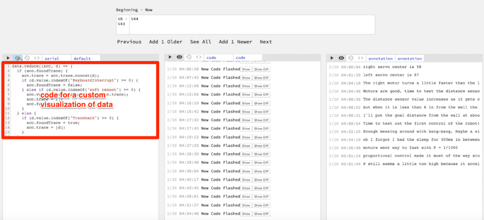
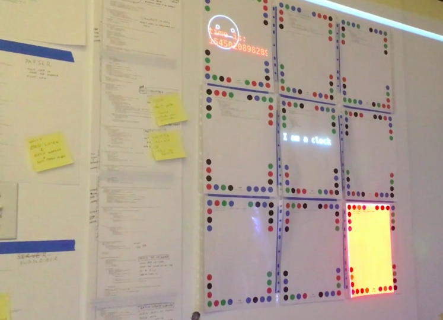

January 11, 2019
I am interested in blurring the boundary between the digital and the physical, and making it easier for everyone to do this as well.
Previously, I was working on a tools for seeing1 and to help tell a more complete story of the making process2. But I heard of Dynamicland and thought it addressed some of the limitations that bothered me about the seeing tools I was making.
Dynamicland is a communal computer, designed for agency, not apps, where people can think like whole humans. Dynamicland puts the computer into the room instead in a tiny box of pixels. In my seeing tools, it felt wrong to put a tool meant to help people see on a screen when the primary work was going on in the room. Also I wondered how people would make custom visualizations. I have a background in data visualization so I could quickly write code to make a custom graph of data but generally this would be challenging. My seeing tool relied primarily on pre-made visualizations and there was a bad jump in complexity and knowledge if you wanted to extend the system. I liked that Dynamicland's generic programming model made it equally easy to make graphics, robots, and improve the system itself.
 A tiny text editor inside of premade visualizations in my previous project the Robot "Seeing Tool"
I wanted to judge the merit of these ideas for myself but Dynamicland is a building in Oakland, CA where the physical building and the coding environment are one in the same. Dynamicland is not an app that can be downloaded and run in a new space. A new space with new people should develop a system that works best for them.
I tried out a couple open-source projects related to "programmable spaces" — Paper Programs by JP Posma and Living Room by the Recurse Center. Both were impressively complete but I felt both were too closely tied to JavaScript and using a web browser. Programming was still done on a computer or in a web browser. I also felt both had too strong of a difference between the programs you could make with the system, and the system code itself.
Therefore, I started to make my own "programmable space" where everything in the system would be done in the room without needing to switch back to a traditional programming experience on a GUI OS.
Initially I tried to use a Dynamicland-like setup with cameras and projectors pointing at papers with colored dots. Each paper was an independent program. Papers in the room would have code written on them. If the paper was out in the room, then anyone in the room could look at the paper and read what it does. Likewise, if the paper was out in the room then the cameras could see it (using the colored dots) and cause the paper's code to run. The one-to-one mapping between what people can see and what programs were running helps the system be understandable. Projectors would project the output of the programs on the paper as nonintrusive display. The text editor used to edit papers was itself another paper you would point that the program you want to edit.
Programs interact by:
This setup worked but was hard to make reliable and keep physically rearranged. The cameras and projectors never felt invisible. The point of the programmable room was to forget about them like you forget about the lights in your ceiling. I was also spending too much time on the code to run the camera and projectors and not spending enough time on the thing I cared about - learning what it's like to work in a programmable room.
To refocus, I scaled back and made a limited but complete demo of a programmable room with a complete editing experience outside a traditional GUI OS.
The room had an always on text-editor and a grid of 9 editable programs. The papers were fixed on the wall so I avoided needing a camera to detect papers. The fixed papers also made the projector easy to set up. Having 9 pre-made programs avoided the issue of updating and creating the physical papers.
After playing around for a few days, I discovered that the room did give promising looking at what it would be like to have a programmable room.

But some limitations hurt the experience:
More experimenting to do...